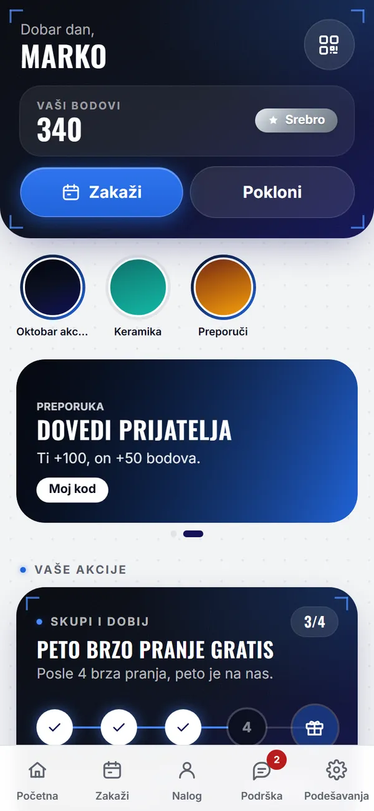
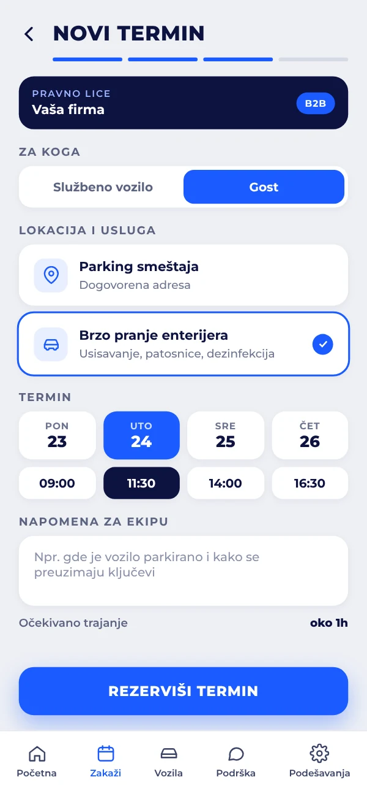
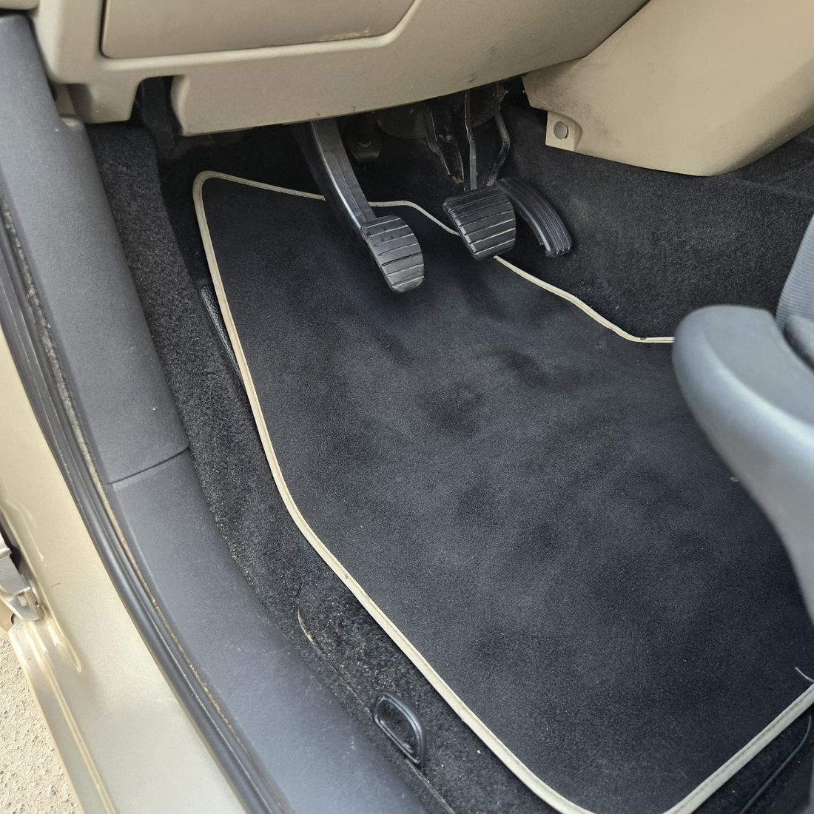
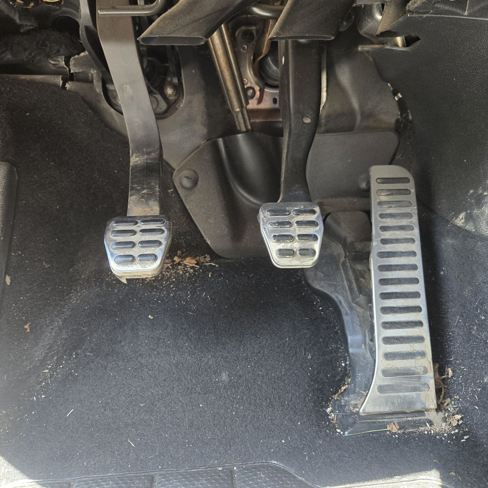
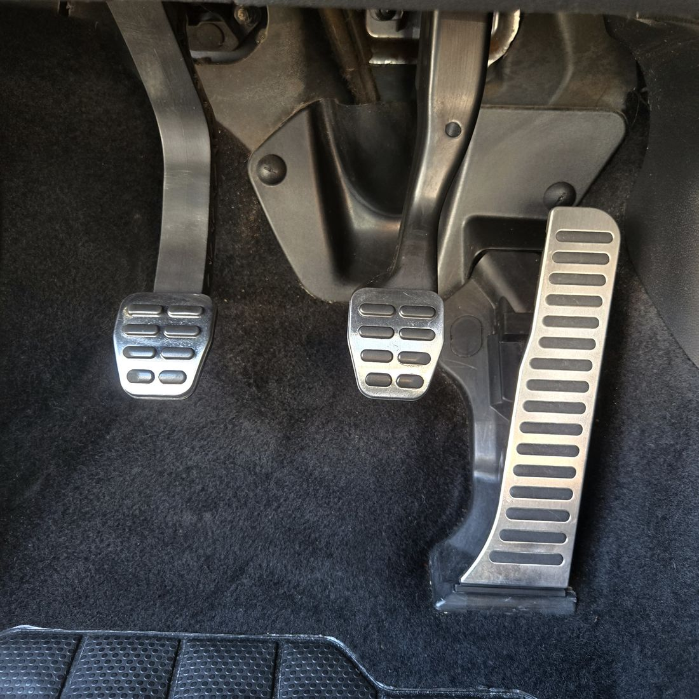
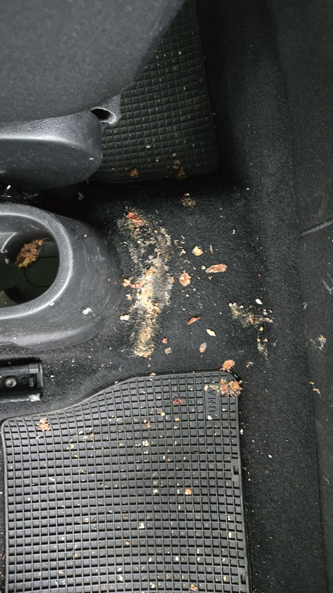
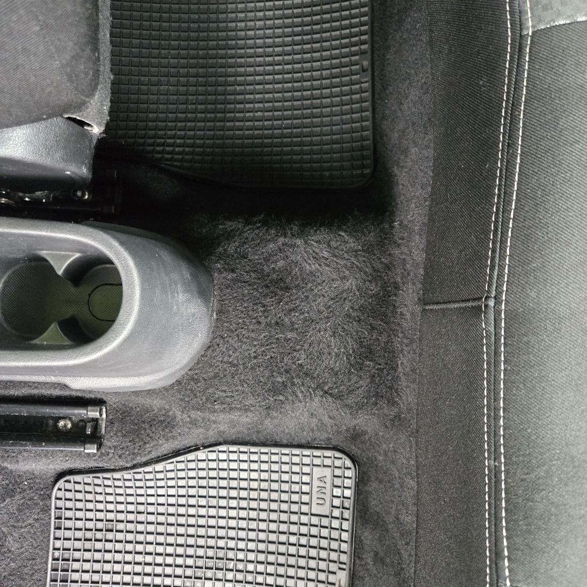
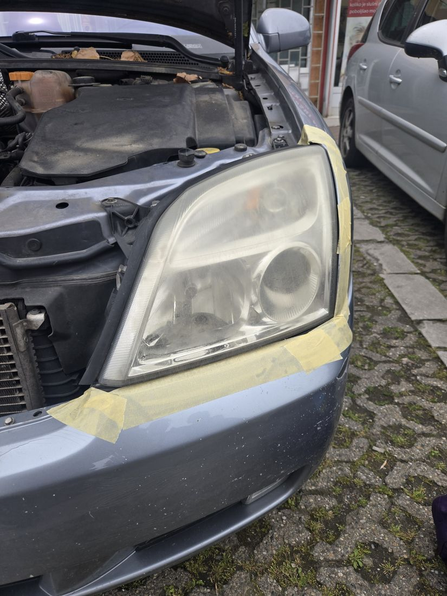
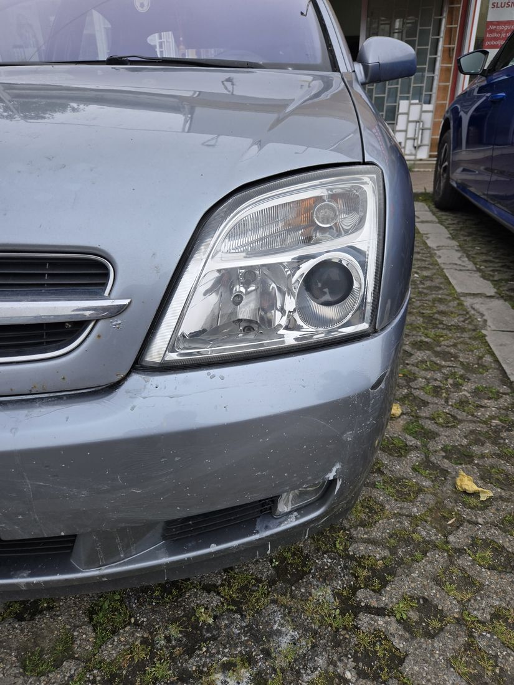

Mojsilov
Detailing
Predstavljanje za poslovne partnere
Profesionalna nega automobila na adresi klijenta u Beogradu i okolini.
Dušan MojsilovMojsilov Detailing
Beograd, novembar 2026.
Profesionalna nega automobila na adresi klijenta u Beogradu i okolini.
Mojsilov Detailing je brend specijalizovan za profesionalnu negu automobila na adresi klijenta u Beogradu i okolini. Naš pristup spaja visok standard izrade sa jednostavnim načinom zakazivanja i dolaskom na lokaciju koja klijentu odgovara. Uslugu tako prilagođavamo njegovom danu, bilo da je automobil parkiran ispred kuće ili na parkingu firme.
Verujemo da se kvalitet usluge vidi u svakom koraku, od prvog razgovora i dogovora o terminu do završne provere vozila. Poštujemo vreme klijenta, jasno komuniciramo šta usluga obuhvata i svakom vozilu pristupamo pažljivo. Inovativnost za nas ima praktičnu vrednost. Ona se vidi u tome koliko je lako zakazati uslugu, koliko vremena klijent štedi i koliko pouzdano može da računa na ono što smo dogovorili.

Najvažnije merilo našeg rada jeste to da nam klijent ponovo poveri svoj automobil. Njegov povratak nam govori da je bio zadovoljan rezultatom, da smo ispoštovali dogovor i da može da se osloni na nas. Na takvom poverenju gradimo Mojsilov Detailing.
Kada dogovorimo termin, dolazimo na adresu klijenta i preuzimamo brigu o automobilu. Donosimo kompletnu opremu, sopstvenu vodu i izvor struje, tako da klijent nema dodatnih obaveza oko pripreme. Dovoljno je da vozilo bude dostupno na dogovorenoj lokaciji, a klijent za to vreme može da nastavi sa svojim danom.
Kvalitet usluge zasnivamo na iskustvu, znanju i profesionalnoj opremi, uz pažnju prema detaljima koji čine razliku u završnom rezultatu. Tokom rada posvećujemo se i mestima koja se lako previde, a postupak prilagođavamo stanju vozila i dogovorenoj usluzi. Cilj nam je da automobil bude temeljno očišćen i uredan, sa izgledom što bližim onom koji je imao kada je bio nov.
Podjednako nam je važno kako se klijent oseća tokom celog procesa. Od prvog razgovora treba da zna šta usluga obuhvata i šta može da očekuje. Poštujemo njegovo vreme, držimo se dogovora i vodimo računa da rezultat opravda poverenje koje nam je ukazao.


Ovi standardi primenjuju se na svaku uslugu i obavezni su za sve članove tima. Njihova svrha je da obezbede bezbedno izvođenje radova, dosledan kvalitet usluge i jasnu komunikaciju sa klijentom, od dolaska na adresu do predaje vozila.
Naš tim dolazi na tačnu adresu koju je klijent naveo prilikom dogovora o terminu.
Vozilo mora biti smešteno tako da ne ometa saobraćaj, kretanje pešaka, pristup objektima ili svakodnevne aktivnosti ljudi u okolini.
Tokom pružanja usluge vodimo računa o nivou buke i organizujemo rad tako da što manje utiče na ljude u okolini. Sredstvima za čišćenje i nečistoćama koje nastaju tokom rada postupamo tako da ne ugrožavamo ljude, imovinu i okolne površine.
Svako vozilo obuhvaćeno je garancijom u skladu sa uslovima ugovorene usluge. Tim je dužan da pri svakom postupku zaštiti vozilo i preduzme potrebne mere kako bi sprečio oštećenja.
Pre predaje vozila obavljamo završni pregled. Proveravamo da li su sve dogovorene stavke u potpunosti izvršene i da li rezultat ispunjava standard kvaliteta Mojsilov Detailinga.
Po završetku svake usluge klijentu ostavljamo poklon-paket kao znak zahvalnosti za ukazano poverenje.
Nakon svake usluge uklanjamo otpad, prljavu vodu i ostatke pranja. Prostor oko vozila ostavljamo čistim i urednim.
Pri radu noću svaki član tima nosi fluorescentnozeleni prsluk visoke vidljivosti i naglavnu lampu. Time obezbeđujemo bolju vidljivost radnog prostora i osoblja radi bezbednosti tima, pešaka i drugih učesnika u saobraćaju.
Cilj je da u 90% slučajeva stignemo na adresu deset minuta pre dogovorenog termina, a u 5% slučajeva tačno na vreme. Kada do kašnjenja ipak dođe, nastojimo da ga ograničimo na pet minuta, uz maksimalno dozvoljeno kašnjenje od deset minuta.
Tokom pružanja usluge klijent može da postavi pitanje o postupku, opremi ili očekivanom rezultatu. Tim je dužan da na svaki upit odgovori jasno i da obrazloži postupak kada klijent zatraži dodatno objašnjenje.
Ako je potrebno pomeriti lične stvari iz vozila, odlažemo ih na mesto dogovoreno sa klijentom. Pri predaji vozila klijentu kažemo gde su odložene.
Nakon završne kontrole klijentu pokazujemo rezultat i dajemo mu priliku da pregleda vozilo i postavi pitanja. Kada je potrebno, objašnjavamo kako da održava tretirane površine i koliko vremena treba da prođe pre njihovog korišćenja.
Veb-sajt Mojsilov Detailinga jedan je od naših najvažnijih projekata i mesto na kojem klijent stiče prvi utisak o tome kako radimo. Zato ga razvijamo po istom principu po kojem pružamo uslugu na adresi. Klijentu želimo da uštedimo vreme, olakšamo odluku i pružimo jasnu sliku o tome šta može da očekuje, još pre nego što nam poveri svoj automobil.
Na jednom mestu dostupni su kompletna ponuda, cene, detaljni opisi usluga i područje na kojem radimo. Fotografije vozila pre i posle tretmana pokazuju rezultate našeg rada, dok recenzije klijenata daju uvid u to kako izgleda saradnja sa nama. Na sajtu predstavljamo i istorijat firme, kako bi posetioci mogli da upoznaju ljude i način rada koji stoje iza brenda.
Sajt klijentima olakšava i samo korišćenje usluga. Privatnim klijentima dostupna je aplikacija za onlajn zakazivanje i prikupljanje bodova u okviru programa lojalnosti. Poslovnim partnerima, nakon dogovora o saradnji, omogućavamo pristup aplikaciji preko koje mogu da zakažu negu službenih vozila i prate istoriju zakazivanja svog voznog parka.
Iako je naš sajt noviji od sajtova brojnih konkurenata, već zauzima prva mesta u rezultatima pretrage za niz relevantnih ključnih reči. Naredni cilj je da postane vodeći sajt za mobilni detailing u Beogradu, kako po vidljivosti u pretrazi, tako i po korisnosti za klijente. Plan razvoja već sprovodimo kroz redovno unapređivanje sadržaja, detaljnije predstavljanje usluga i jednostavnije zakazivanje.
Sajt za nas predstavlja digitalni izraz karaktera Mojsilov Detailinga. Pažnja koju posvećujemo vozilu treba da bude vidljiva već pri prvoj poseti sajtu, u tome koliko lako klijent pronalazi odgovor, koliko jasno razume ponudu i koliko jednostavno može da zakaže uslugu.


Iskustvo klijenta je najvažniji prioritet Mojsilov Detailinga. Zato svaki korak usluge posmatramo iz njegove perspektive. Važno nam je koliko lako može da zakaže termin, da li mu je jasno šta usluga obuhvata, kako se oseća u komunikaciji sa nama i kakav utisak nosi nakon što mu predamo vozilo. Kvalitet našeg rada ogleda se i u stanju automobila i u načinu na koji smo se odnosili prema klijentu.
Tokom pružanja usluge vodimo računa o tome kako razgovaramo sa klijentom i koliko jasno objašnjavamo svoj rad. Otvoreni smo za pitanja, uvažavamo njegove potrebe i objašnjavamo šta radimo, zbog čega biramo određeni postupak i kakav rezultat može da očekuje. Želimo da klijent u svakom trenutku zna šta se dešava sa njegovim automobilom i da može da nam se obrati kad god mu je potrebno pojašnjenje.
Po završetku svake usluge ostavljamo poklon-paket kao znak pažnje i šaljemo fotografije vozila pre i posle tretmana, uz poruku zahvalnosti za ukazano poverenje. Fotografije klijentu omogućavaju da vidi promene i na mestima koja pri prvom pogledu lako promaknu. Način na koji pišemo poruku zahvalnosti pažljivo smo oblikovali i testirali kako bi bila kratka, jasna i prirodna. Na pružene usluge dajemo garanciju u skladu sa njihovim uslovima, a naš kontakt centar dostupan je 24 sata dnevno, sedam dana u nedelji, za sva pitanja i nedoumice.
Najvredniji pokazatelj da smo ispunili svoj cilj jeste kada nam klijent ponovo poveri automobil ili nas, na osnovu sopstvenog iskustva, preporuči nekome do koga mu je stalo. Takva preporuka govori da je poverenje stekao kroz rezultat koji je dobio, pažnju koju smo mu posvetili i jednostavnost celog procesa. To je merilo prema kojem unapređujemo uslugu, od prvog kontakta do podrške nakon obavljenog posla.


Mojsilov Detailing pruža profesionalnu negu automobila na adresi klijenta širom Beograda i okoline. Uslugu prilagođavamo mestu na kojem se vozilo već nalazi i vremenu koje klijentu odgovara. Dok je automobil parkiran ispred kuće ili na parkingu firme, naš tim obavlja dogovoreni tretman, a klijent nastavlja sa svojim danom. Tako vreme koje bi inače izdvojio za odlazak do servisa, čekanje i preuzimanje vozila ostaje na raspolaganju njemu.
Na teren dolazimo prepoznatljivim, brendiranim kombijem sa profesionalnom opremom, sredstvima za rad, sopstvenom vodom i izvorom struje. Uslugu možemo da obavimo u dvorištu, ispred stambene zgrade, na poslovnom parkingu ili na drugoj pogodnoj lokaciji. Dovoljno je da oko vozila ima prostora za potpuno otvaranje vrata i bezbedan rad, uz slobodan prolaz za pešake i nesmetano odvijanje saobraćaja.
Isti standard kvaliteta primenjujemo na svakoj lokaciji, od izbora postupka i pažnje posvećene detaljima do završne provere vozila. Tokom rada vodimo računa o nivou buke i ljudima u okolini. Po završetku uklanjamo otpad, prljavu vodu i ostatke pranja, a prostor oko automobila ostavljamo čistim i urednim.
Fleksibilnost mobilne usluge posebno dolazi do izražaja kada se klijentov raspored menja. Jedan termin može da zakaže na kućnoj adresi, a sledeći na poslu, dok je automobil već parkiran. Upravo tu vidimo vrednost našeg pristupa i razlog da ga stalno unapređujemo. Klijent bira gde mu usluga najviše odgovara, a mi preuzimamo organizaciju rada i brigu o vozilu.


Mojsilov Detailing pruža usluge profesionalne nege automobila na adresi klijenta u Beogradu i okolini. Ponuda obuhvata redovno održavanje, dubinsko čišćenje, spoljašnje pranje i specijalizovane tretmane. U zavisnosti od stanja vozila i potreba klijenta, uslugu možemo da usmerimo na pojedine delove automobila ili da objedinimo detaljno čišćenje enterijera.
Dolazak na adresu je uključen u cenu. Kod dubinskog pranja cena zavisi od veličine vozila i izabranog paketa. Tačan iznos potvrđujemo pre zakazivanja, na osnovu fotografija i stanja vozila ili nameštaja. Sve cene su izražene u dinarima.
| Usluga | Cena | Garancija |
|---|---|---|
| Poliranje jednog fara | 2.500 din | |
| Poliranje oba fara | 3.500 din | 12 meseci |
| Poliranje oba fara sa keramičkom UV zaštitom | 4.700 din | 24 meseca |
Poliranje se izvodi u više faza, uz pripremu prilagođenu stanju farova. Keramička zaštita je deo paketa od 4.700 dinara.
| Usluga | Malo vozilo | Srednje vozilo | Veliko vozilo |
|---|---|---|---|
| Dubinsko pranje enterijera | 9.900 din | 10.900 din | 11.900 din |
| Dubinsko pranje motora | 4.000 din | 5.000 din | 6.000 din |
| Nega kožnih sedišta | 4.000 din | 4.000 din | 4.000 din |
Dubinsko pranje enterijera obuhvata sedišta, pod, plafonsku oblogu i prtljažnik, uz ekstrakciono pranje, tretman parom i antibakterijski tretman. Dubinsko pranje motora obuhvata čišćenje i odmašćivanje motornog prostora, obradu teško dostupnih mesta i UV zaštitu plastike.
| Usluga | Cena |
|---|---|
| Brzo pranje | 3.900 din |
| Brzo pranje za stalne klijente | 2.900 din |
| Dubinsko pranje jednog sedišta | 1.500 din |
| Dubinsko pranje svih sedišta | 4.000 din |
Dubinsko pranje u Mojsilov Detailingu je temeljna nega automobila koju obavljamo na adresi klijenta u Beogradu i okolini. Cilj nam je da unutrašnjost ponovo bude čista, uredna i prijatna za svakodnevnu vožnju. Zato pažnju posvećujemo i površinama koje su odmah vidljive i mestima na kojima se nečistoće zadržavaju, poput šavova sedišta, prostora ispod njih i spojeva unutrašnjih obloga.
Tretman počinjemo pregledom enterijera i izborom postupka prema materijalu, stanju površina i stepenu zaprljanosti. Tekstilna sedišta, naslone, podne obloge i prtljažnik čistimo ekstrakcionom opremom koja izvlači nečistoće iz vlakana. Plafonsku oblogu, unutrašnje površine vrata, kontrolnu tablu i teško dostupna mesta obrađujemo postupcima prilagođenim svakoj površini. Za kožna sedišta koristimo sredstva namenjena čišćenju i nezi kože.
Klijent može da odabere dubinsko pranje enterijera ili kompletan tretman automobila. Kompletan tretman uključuje i spoljašnje pranje karoserije, stakala, felni i guma. Pre zakazivanja potvrđujemo šta usluga obuhvata, cenu i očekivano trajanje. Za kompletan tretman u proseku izdvajamo četiri do pet sati, u zavisnosti od veličine i stanja vozila.
Na dogovorenu adresu dolazimo sa kompletnom opremom, sopstvenom vodom i izvorom struje. Potrebno je samo da vozilo bude dostupno na lokaciji pogodnoj za rad, a klijent za to vreme može da nastavi sa svojim obavezama. Pre predaje vozila proveravamo da li je svaka dogovorena stavka završena, a zatim šaljemo fotografije pre i posle tretmana kako bi klijent mogao da vidi rezultat i na detaljima koji pri prvom pogledu lako promaknu.
Za dubinsko pranje enterijera izdvajamo približno četiri do šest sati, u zavisnosti od veličine vozila i stepena zaprljanosti, kako bismo dovoljno pažnje posvetili svakoj površini, od sedišta i podnih obloga do teško dostupnih delova kabine.


Brzo pranje je usluga redovnog održavanja enterijera koju Mojsilov Detailing obavlja na adresi klijenta. Namenjena je vozilima kojima je potrebno osvežavanje između dubinskih tretmana i uklanjanje nečistoća koje se nakupljaju tokom svakodnevne vožnje.
Tretman obuhvata površinsko usisavanje enterijera, brisanje prašine sa unutrašnjih površina, pranje patosnica i dezinfekciju enterijera. Pažnju posvećujemo mestima koja se svakodnevno koriste, poput prostora za noge, kontrolne table i centralne konzole. Usluga traje najviše dva sata, a automobil je odmah po završetku spreman za vožnju.
Cena prvog brzog pranja iznosi 3.900 dinara. Nakon prvog tretmana, klijent svako naredno brzo pranje može da zakaže po ceni za stalne klijente od 2.900 dinara. Na taj način redovno održavanje enterijera može lako da uklopi u svoj raspored i unapred zna koliko će ga koštati.
Dubinsko pranje motornog prostora je usluga namenjena uklanjanju masnih naslaga, prašine i nečistoća koje se vremenom nakupljaju ispod haube. Cilj tretmana je da motorni prostor bude čist i uredan, uz posebnu pažnju posvećenu spojevima, udubljenjima i drugim teško dostupnim mestima.
Pre početka rada pregledamo motorni prostor i postupak prilagođavamo konstrukciji vozila, stanju površina i stepenu zaprljanosti. Tretman obuhvata hemijsko čišćenje i odmašćivanje, uz pažljiv rad oko električnih priključaka i drugih osetljivih delova. Na kraju na odgovarajuće plastične površine nanosimo UV zaštitu kako bismo doprineli očuvanju njihovog izgleda.
Uslugu obavljamo na dogovorenoj adresi u Beogradu i okolini, sa sopstvenom opremom, vodom i izvorom struje. Po završetku pregledamo obrađene površine i klijentu šaljemo fotografije pre i posle tretmana, kako bi mogao da vidi rezultat i na mestima koja pri prvom pogledu lako promaknu.
Mojsilov Detailing obnavlja matirane, požutele i oksidirane farove na adresi klijenta u Beogradu i okolini. Višefaznom obradom spoljašnje površine vraćamo farovima prozirnost i sjaj. Kada je zamućenje površinsko, poliranje može biti praktično rešenje koje odlaže potrebu za zamenom fara. Dublja mehanička oštećenja procenjujemo na osnovu fotografija pre zakazivanja.
U zavisnosti od stanja fara, mokro brušenje izvodimo u osam do deset faza, granulacijama od P240 do P3000. Tako uklanjamo površinsku oksidaciju i pripremamo plastiku za poliranje.
Koristimo ekscentričnu polirku i profesionalne paste za grubu korekciju, finiju obradu i završno poliranje. Svaka faza doprinosi ravnomernoj obradi i jasnoći završnog rezultata.
Nakon poliranja možemo naneti zaštitni sloj sa UV filterom koji pomaže da farovi duže zadrže prozirnost i sjaj. Uz ovaj paket garancija traje 24 meseca.
Ako farovi tokom garantnog roka izgube kvalitet iz razloga koji je pokriven garancijom, ponovni tretman obavljamo bez naknade. Dolazak na adresu je uračunat u cenu, a tačan iznos potvrđujemo pre zakazivanja na osnovu fotografija i stanja farova.
Na dogovorenu adresu dolazimo sa kompletnom opremom, sopstvenom vodom i izvorom struje. Za jedan far obično je potrebno oko 45 minuta, a za oba oko sat i po. Nakon predaje vozila klijent može da nastavi sa svojim obavezama, a po završetku dobija fotografije pre i posle tretmana. Termin se može dogovoriti pozivom, porukom ili preko Mojsilov aplikacije.
Dubinsko pranje sedišta je tretman namenjen temeljnom čišćenju tekstilnih sedišta i naslona, koji Mojsilov Detailing obavlja na adresi klijenta u Beogradu i okolini. Tokom tretmana uklanjamo nečistoće koje se zadržavaju u vlaknima tkanine, uz posebnu pažnju posvećenu šavovima, pregibima i bočnim delovima sedišta. Usluga se može zakazati za jedno sedište ili za sva sedišta u vozilu.
Pre pranja pregledamo tkaninu, procenjujemo stepen zaprljanosti i izdvajamo mesta kojima je potreban poseban tretman. Sredstvo i način čišćenja biramo prema materijalu i stanju sedišta.
Profesionalnom ekstrakcionom opremom izvlačimo rastvor za čišćenje zajedno sa nečistoćama iz tkanine. Mrlje obrađujemo pojedinačno, a kada starost mrlje ili stanje tkanine mogu da utiču na rezultat, klijentu unapred objašnjavamo šta može da očekuje.
Posebnu pažnju posvećujemo ispiranju tkanine i izvlačenju viška vlage, kako bi na sedištima ostalo što manje ostataka sredstva za čišćenje. Pre predaje vozila pregledamo obrađene površine i klijentu dajemo uputstvo za sušenje.
Sam tretman traje najviše dva sata. Vreme potrebno za potpuno sušenje zavisi prvenstveno od spoljne temperature i provetrenosti vozila. Po završetku tretmana klijentu dajemo okvirnu procenu vremena sušenja prema uslovima na lokaciji. Sedišta su spremna za korišćenje čim se potpuno osuše.
Tretman kožnih sedišta u Mojsilov Detailingu obuhvata čišćenje i završnu negu prilagođenu vrsti presvlake i njenom stanju. Cilj je da uklonimo tragove svakodnevne upotrebe, sačuvamo prirodan izgled površine i ostavimo sedišta prijatnim na dodir. Posebnu pažnju posvećujemo šavovima, pregibima i bočnim osloncima, gde se nečistoće najčešće nakupljaju.
Pre čišćenja pregledamo presvlaku, njenu završnu obradu i mesta na kojima je vidljivo habanje. Uklanjamo prašinu i sitne nečistoće iz šavova i spojeva, a sredstvo i način rada biramo prema stanju površine.
Sedišta čistimo deo po deo, sredstvima namenjenim kožnim presvlakama. Pažnju usmeravamo na površine koje su najčešće u kontaktu sa odećom i kožom, naročito na sedalni deo i bočne oslonce vozačevog sedišta. Na perforiranim površinama radimo uz kontrolisanu količinu vlage kako se sredstvo ne bi zadržavalo u otvorima.
Uklanjamo ostatke sredstva za čišćenje, a kada vrsta i stanje presvlake to dozvoljavaju, nanosimo odgovarajuće sredstvo za negu ili zaštitu. Na kraju proveravamo da li je površina ravnomerno obrađena i da li je zadržala izgled karakterističan za tu presvlaku.
Nakon tretmana sedišta su čistija, ujednačenijeg izgleda i prijatna na dodir. Ako pri pregledu uočimo pukotine, oguljene delove ili gubitak boje, pre početka rada objasnićemo vam kakav rezultat možete da očekujete od čišćenja. Uslugu obavljamo na vašoj adresi u Beogradu i okolini, a tretman možemo da izvedemo zasebno ili uz čišćenje ostatka enterijera.
Poliranje plastičnih delova instrumentne table namenjeno je obnovi sjajnih površina na kojima su se vremenom pojavile sitne ogrebotine, tragovi brisanja ili blago zamućenje. Cilj tretmana je da obrađeni delovi ponovo imaju čist i ujednačen izgled, uz očuvanje njihove originalne završne obrade.
Pre početka rada pregledamo površinu i procenjujemo dubinu ogrebotina. Poliramo samo delove čiji materijal i završna obrada dozvoljavaju takav postupak. Mat i teksturirane površine obrađujemo čišćenjem i odgovarajućom negom kako bi zadržale svoj izgled.
Odabrane delove najpre pažljivo očistimo, a zatim ih poliramo uz kontrolisan pritisak i zaštitu okolnih površina. Po završetku proveravamo rezultat pod različitim uglovima svetla. Sitni tragovi mogu postati znatno manje vidljivi, dok kod dubljih ogrebotina unapred objašnjavamo u kojoj meri ih je moguće ublažiti. Tretman obavljamo po dogovoru, u okviru nege enterijera na adresi klijenta.


Mojsilov aplikacija za pravna lica omogućava poslovnim partnerima da samostalno zakažu negu službenih vozila ili automobila svojih gostiju. Termin se rezerviše u tri do četiri klika, a naš tim dolazi na dogovorenu adresu u Beogradu i okolini. Tako se pranje enterijera, poliranje farova i druge dogovorene usluge mogu planirati u vreme kada je vozilo već parkirano, između dve smene, tokom boravka gosta ili pre predaje automobila sledećem klijentu.
Pristup aplikaciji dobija se nakon dogovora o saradnji. Sa svakim partnerom utvrđujemo koje su usluge potrebne, koliko vozila treba održavati i na kojim adresama ćemo raditi. Dogovor može obuhvatiti jednu poslovnicu ili više lokacija, uz raspored dolazaka i pogodnosti prilagođene načinu rada firme.
Prilikom zakazivanja zaposleni bira da li je termin namenjen službenom vozilu ili automobilu gosta, zatim odabira jednu od dogovorenih adresa, uslugu i slobodan termin. Po potrebi može da doda napomenu, na primer gde je vozilo parkirano. Nakon potvrde termina preuzimamo organizaciju dolaska i donosimo kompletnu opremu, sopstvenu vodu i izvor struje. Po završetku partner dobija fotografije pre i posle tretmana, uz jasan uvid u rezultat obavljene usluge.
Mogu da zakažu negu voznog parka na parkingu firme i usklade dolazak sa smenama vozača ili periodom između dva izlaska na teren.
Mogu da ponude gostu negu automobila na parkingu smeštaja. Osoblje može da rezerviše termin u ime gosta, a gost može i da nas pozove direktno. U oba slučaja naš tim preuzima dogovor o usluzi, lokaciji i vremenu dolaska.
Mogu da planiraju pripremu vozila za izlaganje ili narednu primopredaju. Rent-a-car partnerima dajemo prednost pri organizaciji termina kada vozilo treba brzo pripremiti za sledećeg klijenta.
Dolazak se može dogovoriti svakog dana, uključujući vikende i praznike. Za informacije o uslugama, pomoć pri zakazivanju i pitanja u vezi sa potvrđenim terminom partnerima je dostupan kontakt centar. Stojimo iza dogovorenog kvaliteta i nakon završetka tretmana. Ako je potrebna dodatna obrada, preuzimamo odgovornost i dogovaramo naredni korak sa partnerom.


U Mojsilov Detailingu transparentnost znači da naš partner u svakom trenutku zna šta smo dogovorili, šta može da očekuje i kome može da se obrati. Od prvog razgovora otvoreno govorimo o tome šta možemo da preuzmemo, u kom roku i pod kojim uslovima. Kada damo reč, stojimo iza nje. Ako okolnosti utiču na dogovor, partnera obaveštavamo na vreme, objašnjavamo šta se promenilo i zajedno dogovaramo naredni korak.
Otvorena komunikacija podrazumeva i da pažljivo saslušamo drugu stranu. Svako pitanje, predlog ili primedbu shvatamo ozbiljno, jer nam stav partnera pomaže da razumemo kako se naša usluga uklapa u njegovo poslovanje. Za pitanja, dogovor ili podršku poslovnim partnerima smo na raspolaganju 24 sata dnevno, sedam dana u nedelji.
Dugoročnu saradnju gradimo na uzajamnom poštovanju i odgovornosti za preuzete obaveze. Kada partner može da se osloni na našu reč, lakše planira svoj posao, a mi bolje razumemo kako da mu pružimo uslugu koja mu zaista odgovara. Tako poverenje koje gradimo kroz svakodnevnu saradnju postaje osnova za razvoj obe strane.


U Mojsilov Detailingu kvalitet rada počinje jasnim dogovorom. Pre tretmana utvrđujemo koje delove vozila obrađujemo i kakav rezultat klijent može da očekuje s obzirom na stanje vozila. Sredstva, opremu i postupak biramo prema materijalu, stepenu zaprljanosti i stanju površine. Ako postojeće oštećenje, habanje ili dugotrajna mrlja mogu da utiču na rezultat, to objašnjavamo pre početka rada.
Pre predaje vozila pregledamo sve obrađene površine i proveravamo da li je svaka dogovorena stavka u potpunosti izvršena. Kod dubinskog pranja rezultat dokumentujemo fotografijama pre i posle tretmana, kako bi klijent mogao jasno da vidi šta je urađeno.
Kod dubinskog pranja odgovaramo za kvalitet izvedenog rada i za to da dogovoreni obim usluge bude ispunjen u trenutku predaje vozila. Koliko će enterijer ostati čist zavisi od načina i učestalosti korišćenja automobila. Ako klijent nakon preuzimanja primeti da neki dogovoreni deo nije obrađen kako treba, proveravamo primedbu i, kada utvrdimo propust u svom radu, dogovaramo njegovo otklanjanje.
Standardno poliranje oba fara.
Poliranje sa keramičkom UV zaštitom.
Ako farovi tokom garantnog roka izgube prozirnost ili kvalitet završne obrade iz razloga obuhvaćenog uslovima garancije, ponovni tretman obavljamo bez naknade.
| Proizvod ili pribor | Namena |
|---|---|
| FX Protect Heavy Cut | Gruba polirna pasta koju koristimo u korektivnoj fazi poliranja farova, nakon pripreme površine. |
| FX Protect Vision Coating C-12 | Keramički premaz koji nanosimo na pripremljene farove nakon poliranja. Proizvođač navodi farove među površinama pogodnim za primenu. |
| Textile Cleaner 1 L | Koncentrovano, niskopenušavo sredstvo koje koristimo za dubinsko pranje tekstilnih sedišta ekstrakcionom mašinom. Pogodno je i za čišćenje tepiha i drugih tekstilnih obloga. |
| Gyeon Q²M LeatherCleaner Strong 1 L | Sredstvo za temeljno čišćenje kožnih sedišta. Koristimo ga za uklanjanje nakupljenih nečistoća i pripremu odgovarajuće kože za zaštitni premaz. |
| Gyeon Q² LeatherShield | Keramički zaštitni premaz za kompatibilne kožne presvlake. Nanosimo ga nakon čišćenja i pripreme površine kako bismo olakšali kasnije održavanje kože. |
| FX Protect Heavy Cut, Medium Cut i Fine Cut | Paste za grubu korekciju, međufazu i završno poliranje odgovarajućih sjajnih plastičnih delova instrumentne table. Pastu biramo prema materijalu, završnoj obradi i stanju površine. |
| FX Protect sunđeri za poliranje, grubi, srednji i završni | Sunđeri različitih tvrdoća koje uparujemo sa pastom i fazom rada, od korekcije do završne obrade. |
| Nasiol CabinShine | Sredstvo za završnu negu i zaštitu unutrašnjih plastičnih površina. Koristimo ga nakon čišćenja kako bismo osvežili izgled plastike. |
| Koch Chemie Mehrzweckreiniger | Čistač enterijera za izraženije naslage prljavštine na odgovarajućim plastičnim oblogama, pragovima, vratima i drugim unutrašnjim površinama. |
| Koch Chemie Green Star | Koncentrovano alkalno sredstvo koje koristimo za jače zaprljane, kompatibilne plastične površine. Primenu prilagođavamo materijalu i stepenu zaprljanosti. |
| Meguiar's Ultimate Black Plastic Restorer G15812 | Sredstvo za obnavljanje boje i zaštitu spoljašnjih plastičnih, vinilnih i gumenih obloga, poput lajsni i nelakiranih delova branika. |
| Proizvod ili pribor | Namena |
|---|---|
| Work Stuff detailing četkice različitih tvrdoća | Za čišćenje šavova, spojeva, uglova i drugih teško dostupnih mesta. Tvrdoću vlakana biramo prema osetljivosti površine i vrsti nečistoće. |
| Koch Chemie Glass Cleaner | Sredstvo za čišćenje unutrašnje i spoljašnje strane automobilskih stakala i ogledala. Koristimo ga za uklanjanje otisaka, masnog filma i svakodnevne prljavštine. |
| Ma Fra Fantasie d'Elisir Berga Note | Parfem za automobil koji koristimo za završno osvežavanje kabine nakon čišćenja. |
| Profesionalne mikrofiber krpe različitih vrsta i veličina | Biramo krpu prema zadatku, od brisanja prašine i čišćenja stakala do obrade osetljive plastike, uklanjanja ostataka paste i završnog brisanja. |
| Work Stuff prskalice otporne na hemiju | Za ravnomerno nanošenje kompatibilnih sredstava i kontrolu količine koju koristimo tokom tretmana. |
| Koch Chemie Orange Power | Specijalno sredstvo za ciljano uklanjanje žvakaće gume, ostataka lepka i drugih tvrdokornih lepljivih naslaga sa kompatibilnih površina. |
| Koch Chemie THE FINISHER DisplayExpert | Namenski čistač za osetljive ekrane i odgovarajuće glatke površine. Koristimo ga za uklanjanje prašine, otisaka prstiju i tragova dodira. |
| Koch Chemie Gummifix | Nemasno sredstvo za završno održavanje gumenih patosnica i odgovarajućih gumenih i plastičnih delova enterijera. |
| Koch Chemie Fresh Up | Sredstvo za neutralisanje neprijatnih mirisa koje koristimo nakon čišćenja površina i uklanjanja izvora mirisa. |
| Koch Chemie Tinten- & Kuli-Ex | Namensko sredstvo za ciljano uklanjanje tragova mastila i hemijske olovke, uz prethodnu proveru kompatibilnosti materijala i postojanosti boje. |
| Koch Chemie Motorplast | Završni konzervans koji nanosimo na odgovarajuće površine motornog prostora nakon čišćenja. Obrađenim delovima daje uredan, ujednačen izgled. |
Više od 500 obavljenih usluga pokazuje koliko nam je puta ukazano poverenje. Recenzije klijenata daju tim brojkama smisao. U njima se izdvajaju tačnost, pažnja posvećena detaljima i mogućnost da automobil bude sređen na adresi klijenta, dok on nastavlja sa svojim obavezama. Upravo po tim detaljima želimo da se prepoznaje Mojsilov Detailing.
„Све похвале за момка који ради дубинско прање! Изузетно је тачан, прецизан, вредан и веома одговоран. Ретко се сретне неко ко свом послу приступа са толико пажње и посвећености. Аутомобил је очишћен до најситнијих детаља, од седишта, са којих су мрље потпуно уклоњене, преко темељно освежених патоси, до неприступачних места око педала и у доњем делу кабине где се прљавштина највише накупља. Сва тврдокорна прљавштина је уклоњена, а унутрашњост аутомобила сада изгледа и мирише буквално као нова. Сваки детаљ је испоштован до крајњих граница, посао је урађен без иједне грешке, педантно и тачно на време. Ако вам је потребан неко ко је изузетно поуздан и ко се труди у ономе што ради, имате моју топлу препоруку!“
„Изузетно професионална услуга од почетка до краја. Момак је тачан, пријатан и веома посвећен свом послу. Фарови су фантастични након полимеризације и фарбања, с обзиром на претходно стање, резултат је далеко изнад мојих очекивања. Ретко се наилази на тако квалитетан рад. Честитам и велика, искрена препорука!“
„Одличан рад. Фарови изгледају као нови (аутомобил стар 20 година и сада са новим делом ;)). Све препоруке. Долазак на адресу заиста штеди време, а резултат је фантастичан по веома приступачној цени. Професионалан приступ, пријатна комуникација. Хвала пуно. Вукица“






U Mojsilov Detailingu inovativnost se vidi u tome koliko smo klijentu olakšali negu automobila. Naš cilj je da profesionalni detailing učinimo dostupnim za redovno održavanje vozila, uz pristupačne cene i uslugu koju klijent može da uklopi u svoj dan. Zato smo mobilni rad, digitalno zakazivanje i jasne standarde kvaliteta povezali u isti način poslovanja.
Dolazimo na kućnu adresu, parking firme ili drugu pogodnu lokaciju u Beogradu i okolini. Donosimo kompletnu opremu, sopstvenu vodu i izvor struje. Klijent tako može da zakaže dubinsko pranje enterijera ili poliranje farova dok je automobil već parkiran, a vreme koje bi izdvojio za odlazak i preuzimanje vozila zadržava za svoje obaveze.
Privatni klijenti mogu da zakažu termin onlajn i prate bodove u programu lojalnosti. Poslovni partneri imaju zasebnu aplikaciju preko koje u nekoliko koraka zakazuju negu službenog vozila ili automobila gosta na jednoj od dogovorenih lokacija. Digitalno zakazivanje smanjuje potrebu za pozivima i dopisivanjem, dok je kontakt centar dostupan za pitanja, dogovor i podršku.
Profesionalnu negu vozila nudimo u cenovnom rangu koji je pristupačan širokom krugu klijenata. Vrednost usluge vidi se u postupku prilagođenom stanju vozila, pažnji posvećenoj teško dostupnim mestima i završnoj kontroli pre predaje. Klijent unapred zna šta je dogovoreno, a fotografije pre i posle tretmana daju mu jasan uvid u rezultat.
Mojsilov Detailing razvijamo kao savremenu uslužnu kompaniju, sa jasno definisanim postupcima za zakazivanje, dolazak, izvođenje radova i podršku nakon usluge. Brendirani kombi čini naš tim prepoznatljivim na terenu, a poštovanje termina, urednost prostora nakon rada i odgovornost za dogovoreni rezultat daju tom identitetu sadržaj.
Ambicija nam je da na tržištu nege automobila izgradimo ponudu prepoznatljivu po tome kako funkcioniše u praksi. Klijent lako zakazuje, zna šta može da očekuje i dobija profesionalnu uslugu na mestu koje mu odgovara.
Kontakt centar Mojsilov Detailinga dostupan je 24 sata dnevno, sedam dana u nedelji, privatnim klijentima i poslovnim partnerima. Pozivom možete da zakažete termin, dobijete informacije o uslugama ili zatražite pomoć u vezi sa već dogovorenim dolaskom. Najpre vas saslušamo kako bismo razumeli šta vam je potrebno, a zatim vam objasnimo koja usluga odgovara stanju vozila i rezultatu koji želite. Pre potvrde termina dobijate jasne informacije o tome šta tretman obuhvata, koliko traje i kako je organizovan dolazak na vašu adresu.
Ako je potrebna dodatna procena, povezujemo vaš upit sa kolegama koji izvode tretman kako biste dobili odgovor zasnovan na stanju vašeg vozila. Kontakt centar vam je na raspolaganju i nakon završetka usluge, bilo da vam je potreban savet o održavanju ili želite da ukažete na nešto što zahteva našu pažnju. Kada primimo reklamaciju, saslušamo vas, proverimo šta je dogovoreno i objasnimo vam kako ćemo postupiti. Cilj nam je da nakon svakog razgovora znate šta možete da očekujete i ko je odgovoran za sledeći korak.
Kontakt centar za klijente i poslovne partnere.
Telefon, Viber i WhatsApp.


Mojsilov Detailing pruža usluge mobilne nege automobila u svih 17 beogradskih opština i na odabranim lokacijama u široj okolini Beograda. Dolazimo na kućnu adresu, parking firme, ispred poslovnice ili na drugu dogovorenu lokaciju na kojoj ima dovoljno prostora za bezbedan rad. Kompletnu opremu, sopstvenu vodu i izvor struje donosimo sa sobom.
Barajevo, Voždovac, Vračar, Grocka, Zvezdara, Zemun, Lazarevac, Mladenovac, Novi Beograd, Obrenovac, Palilula, Rakovica, Savski venac, Sopot, Stari grad, Surčin i Čukarica.
Bečmen, Jakovo, Mala Moštanica, Sremčica, Vrčin, Boleč, Vinča, Veliko Selo, Padinska Skela, Vrbovski, Stari Banovci, Novi Banovci, Nova Pazova, Stara Pazova, Vojka, Ugrinovci i Krnješevci.
U dogovoru sa poslovnim partnerom, područje rada možemo proširiti i na lokacije izvan redovne zone. Ako firma ima vozila na više adresa, pri dogovoru o saradnji utvrđujemo koje lokacije možemo da uključimo i kako da dolaske uskladimo sa rasporedom poslovnica i potrebama voznog parka.